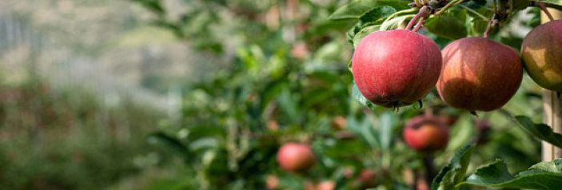
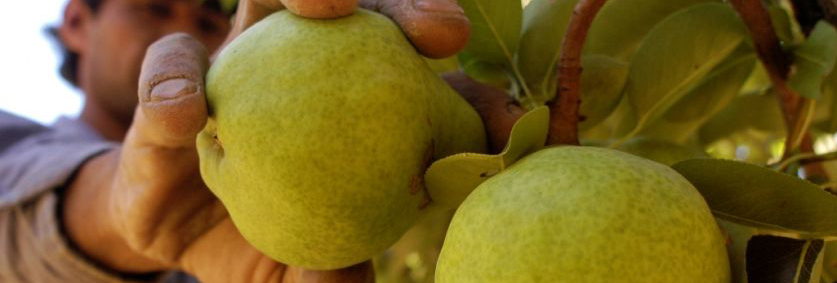
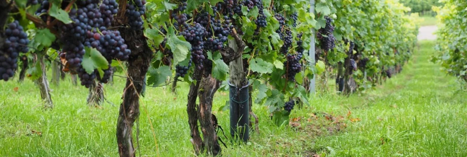
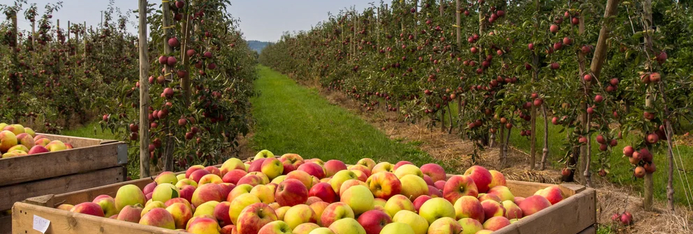
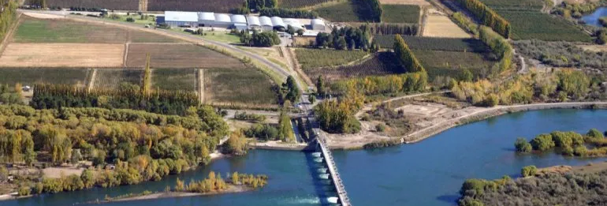
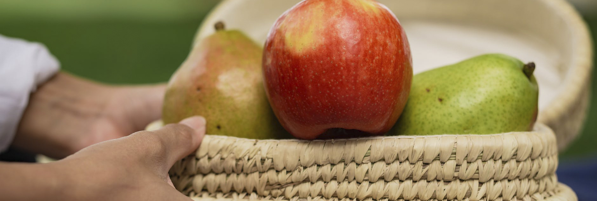

Somos el valle capaz de producir la más ricas variedades de Peras y Manzanas de la Argentina.
Te esperamos durante todo el año para que puedas disfrutar de las distintas propuestas y te lleves un hermoso recuerdo con gusto a las frutas mas ricas de la Patagonia Argentina.
¡No te pierdas nuestras propuestas gastronómicas, turísticas y nuestras fiestas anuales!
El valle te espera y te invita a volver.


